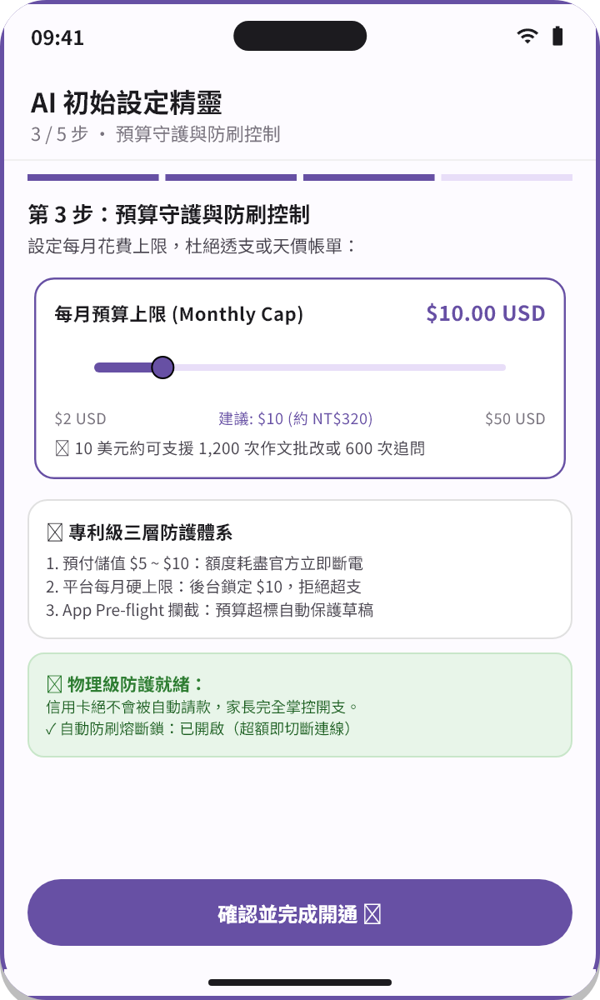
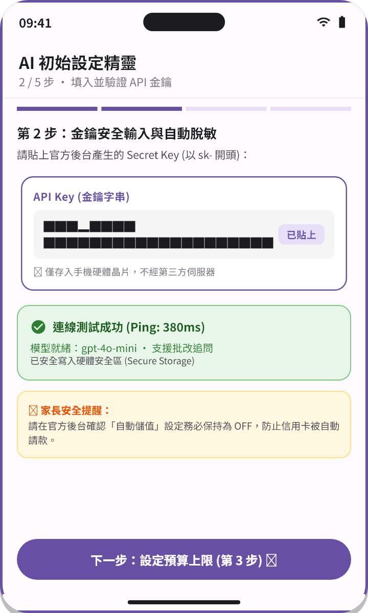

學測教練｜家長 AI 設定指南（5 分鐘）
最後更新日期：2026-10-23
💡 家長請放心：本指南專為高中生家長設計。跟著以下步驟，只需花費約 5 分鐘與新台幣 160 ~ 320 元（$5 ~ $10 美元），即可為孩子開通專屬 AI 學習教練，並享有物理級的用量額度防護，絕無透支或意外帳單風險！
1. 這是什麼？（3 句話搞懂 BYOK）
不想申請金鑰？官方點數代理方案
若家長不希望自行前往 Google Cloud 或 OpenAI 註冊開發者帳號並綁定信用卡，學測教練現已提供更便捷的「官方點數代理」模式：
- 免註冊外站金鑰：學生或家長可直接於 App 內「點數商城」透過 Apple App Store 或 Google Play 購買點數包。
- 儲值立即可用，永不過期：採用微美金會計制度（1 點＝$0.001 美元），用多少扣多少，無月租低消，點數永久有效。
- 天然支出硬上限：點數額度用完即自動停止 AI 批改，不會自動請款，提供最直觀的家用開支控制。
- 跨手冊切換指引：如需了解雙軌切換或微美金扣抵細節，請參閱主教學手冊第 8 章 點數與雙軌模式切換指南。
自備金鑰 (BYOK) 的核心優勢
- 直接批發價，無需高額月租：「學測教練」採用 BYOK (Bring Your Own Key, 自帶金鑰) 架構，讓孩子直接使用官方 API 批發用量計費，免去一般商業 App 每月數百甚至上千元的訂閱綁約。
- 每次練習僅需幾毛錢：每次題目批改、思路反思或大白話引導的推論費用僅約 新台幣 0.1 ~ 0.3 元。即使在高三衝刺階段每天高強度使用，數個月的總花費通常不超過新台幣 200 元。
- 安全合規，家長完全掌管預算：依國際 AI 平台規範，未成年學生需由家長協助開立帳戶並綁定預算防線。API 金鑰全程存放在孩子手機內部的硬體安全區，保障學習個資絕對隱私。
2. 費用如何被保護？（三層防護體系）
許多家長最擔心的問題是：「綁定信用卡後，會不會被扣走幾千幾萬元？」
請家長安心，本系統的核心設計主軸為：「預付額度 ＝ 天然硬上限」。您在帳戶中預付儲值多少額度，就只能使用多少。餘額一旦歸零，API 便立即自動斷電停止，絕不可能產生透支或天價帳單。
此外，我們建立並推薦了完整的三層防護網：
| 防護層級 | 執行主體 | 防護機制 | 作用說明 |
|---|---|---|---|
| 第一層：平台預付餘額 | AI 平台 (OpenAI / Anthropic) | 預付儲值 $5 ~ $10 credits | 關鍵防線：務必關閉自動補款（Auto-recharge），額度用盡立即物理級斷電，絕不超支。 |
| 第二層：平台每月硬上限 | AI 平台後台設定 | Spend Limit / Hard Limit | 於帳戶後台將每月扣款硬上限鎖定為 $5 ~ $10，作為第二道防呆保險。 |
| 第三層：App 內預算守護 | 學測教練 App | 預設每月 $5 USD (NT$160) 攔截 | 在發出任何 AI 請求前進行本機 Pre-flight 檢查，超額立即短路攔截並完整保留作答草稿。 |
📊 $5 美元（約 NT$160）可以使用多久？
- 費曼學習法批改：約可完成 300 ~ 500 次 完整批改與骨架分析。
- 蘇格拉底思維引導：約可進行 1,000 次以上 的深度追問與答疑。
- 換算下來，足以支撐一位認真衝刺的學測考生 2 ~ 3 個月的密集練習用量！
📱 App 內預算守護與防刷操作畫面示範

- ① 每月預算滑桿設定：可自由滑動調整每月預算上限（如 $10 USD，約 NT$320），預算透明可控。
- ② 專利級三層防護網：整合平台預付額度、平台硬上限與 App 本機 Pre-flight 攔截，層層把關。
- ③ 自動防刷熔斷鎖：達到上限時本機自動短路停止連網，絕不自動向信用卡請款，學生作答草稿 100% 完整保留。
3. 選擇適合的 AI 平台
學測教練支援全球領先的大型語言模型，您可依照孩子的練習偏好選擇適合的服務商：
-
預設首選：OpenAI（最推薦）
- 特色：開戶與台灣信用卡相容度最高，系統穩定迅捷；理科數學推導與自然科邏輯解析精準。
- 建議模型：
gpt-4o-mini（極具性價比、速度飛快）。 - 官方最新模型與報價請參考：OpenAI Models 官方文件。
-
優質次選：Anthropic
- 特色：文字表達細膩流暢、批判性思維深入；國寫作文評析、社會科論述反思表現尤為突出。
- 建議模型：
claude-3-5-haiku-20241022。 - 官方最新模型與報價請參考：Anthropic Claude Models 官方文件。
-
相容進階：DeepSeek
- 特色：性價比極高，通訊協定相容 OpenAI，適合進階使用者設定相容端點（Compatible Host）。
4. 分平台設定步驟
設定流程非常簡單，每家平台僅需 5 ~ 7 步即可搞定：
🟢 方案 A：OpenAI 設定步驟（最推薦）
- 註冊帳號：前往 OpenAI Platform 官網，以家長的 Google 帳號或 Email 註冊登入。
- 進入帳務頁面：點擊右上角齒輪圖示進入 Settings，選擇「Billing」分頁。
- 綁定信用卡：點擊「Add payment details」綁定付款信用卡。
- 小額預付儲值：點擊「Add to credit balance」，單次購買 $5 或 $10 USD。
- ⚠️ 關鍵安全設定：關閉自動補款（Auto-recharge）！
- 請檢查頁面上的「Automatically recharge」，務必保持為 OFF（關閉）狀態！
- 如此一來，額度扣完即停，絕對不會自動自信用卡請款。
- 設定硬上限：點擊「Usage limits」，將「Monthly hard limit」設置為 $5 或 $10。
- 產生專用金鑰：進入「API keys」頁面，點擊「Create new secret key」，名稱命名為
ExamCoach-Student，並完成複製（請接續遵循「第 5 節安全動線」進行交付）。
🟣 方案 B：Anthropic 設定步驟
- 註冊登入：前往 Anthropic Console 官網，以家長帳號登入。
- 進入帳務分頁：點擊左側「Settings」→「Plans & Billing」。
- 小額預付儲值：點擊「Add funds」或「Claim」，儲值 $5 ~ $10 USD 預付額度。
- 設定支出硬上限：在「Spend limits」設定中，將「Monthly limit」限制為 $5 或 $10 USD。
- 產生專用金鑰：點擊左側「API Keys」，點擊「Create Key」，名稱填寫
ExamCoach-Student，建立後複製產生的金鑰（請接續遵循「第 5 節安全動線」進行交付）。
🔵 方案 C：DeepSeek 相容端點進階設定
- 前往 DeepSeek 開放平台 註冊並小額儲值。
- 建立專用 API Key 並複製。
- 開啟學測教練 App，進入「設定」→「AI 與金鑰管理」，展開對應槽位的「進階參數 (選填)」：
- 相容主機 (Compatible Host)：填入
https://api.deepseek.com - 模型名稱 (Model ID)：填入官方名稱（如
deepseek-chat）
- 相容主機 (Compatible Host)：填入
- ⚠️ 知情聲明與預算斷層提醒：
- 選擇相容端點時，您的作答資料將依設定送往該服務商處理。
- 因第三方相容模型之收費標準各異且未內建於 App 定價庫，App 端之預算守護統計將暫時記錄為 $0（
uncosted）。請於 AI 設定頁點擊該模型手動「補設單價」，或直接以該平台後台的「預付餘額」作為主要花費硬上限防線。
5. 金鑰安全交付動線
金鑰就如同提款卡密碼，請務必遵照以下安全交付準則，守護數位資產：
🌟 唯一推薦安全動線：在學生手機瀏覽器上產生並貼入
- 家長可以在自己的電腦或手機上完成帳號註冊、信用卡綁卡與「關閉自動儲值」的安全防護設定。
- 到了產生 API 金鑰的最後一步，請改用「孩子的手機瀏覽器」登入該 AI 平台後台。
- 於學生手機上點擊「建立金鑰（Create Key）」並立即複製。
- 切換回學生手機上的「學測教練」App，於設定頁貼入對應槽位完成連線儲存。
- 🔒 核心安全優勢：API 金鑰全程在孩子手機內部產生並直接存入系統硬體安全區，完全不經過任何通訊傳輸，達到最高等級的安全隔離！
🚫 嚴格禁止的傳遞管道
- ❌ 嚴禁透過 LINE、Messenger、微信或簡訊傳送金鑰明文！通訊軟體的對話紀錄具有雲端備份，極易在雲端或被轉傳時洩漏。
- ❌ 嚴禁透過 Email 寄送金鑰明文。
- ❌ 嚴禁將金鑰截圖存放在手機相簿或公開雲端筆記中。
- 🚨 若懷疑金鑰曾意外洩漏：請不必驚慌，立即登入 AI 平台後台的 API Keys 頁面，點擊「Revoke（撤銷）」或「Delete（刪除）」，該金鑰便立即永久失效；接著重新產生一組新金鑰即可。
📱 App 內金鑰輸入與連線測試操作畫面示範

- ① 選擇服務商：在「AI 初始設定精靈」或設定頁，點選 OpenAI 或 Anthropic。
- ② 貼上專用金鑰：字串自動進行星號脫敏遮罩處理，杜絕旁人窺視。
- ③ 連線測試與硬體安全加密：按下連線測試，出現綠色勾號即表示連線成功（Ping 約 380ms），金鑰直接加密存入孩子手機的硬體安全儲存區（Secure Storage），不經任何第三方伺服器。
6. 常見問題 FAQ
Q1：台灣信用卡在綁卡時失敗或被拒絕，該如何處理？
- 確認開通海外交易：請確認該信用卡是否已開通「國外 / 國際線上交易」功能。
- 切勿關閉 3D 驗證視窗：綁定過程中通常會彈出銀行的 3D Secure 驗證頁（發送簡訊 OTP 或銀行 App 確認推播），請耐心等待完成驗證，切勿中途關閉視窗。
- 留意卡片類型限制：超商儲值卡、郵局無跨國交易功能之金融卡、預付卡無法用於扣款；請使用一般銀行發行之信用卡（Visa / MasterCard / JCB）或具備完整 3DS 海外線上刷卡功能之簽帳金融卡。
- 銀行防詐風控阻擋：部分台灣銀行對海外科技公司小額扣款較嚴格，若持續刷不過，可致電信用卡客服告知欲刷「OpenAI / Anthropic 海外交易」，客服放行後即可順利綁定。
Q2：學生輸入的作答題目與批改內容，會被拿去訓練大模型嗎？
- 不會。各大 AI 服務商（OpenAI、Anthropic）均在商業 API 服務條款中明文承諾：透過商業 API 傳輸的數據絕不會被用於訓練模型。
- 學測教練 App 採用本機直連技術，裝置與官方端點間直接傳輸，本 App 亦無架設任何中繼伺服器轉錄學生內文，隱私權受完整保障。
Q3：為什麼 DeepSeek 相容端點的預算守護會顯示 $0？
- 這是因為第三方自訂模型名稱成千上百，App 內建的離線定價庫僅收錄 OpenAI 與 Anthropic 的標準官方模型。
- 若使用相容端點，App 為了避免胡亂估算，會將未知名稱標記為未計費。您可以在學測教練 App 的「AI 與金鑰管理」頁面中，點擊該模型手動「補設每百萬 Token 單價」，即可恢復即時費用試算與預算守護攔截。
Q4：在網頁上設定完成後，要如何回到 App 啟用？
- 只需開啟孩子手機上的「學測教練」App，點擊底部導覽列「設定」→「AI 與金鑰管理」（或在「AI 初始設定精靈」第二步），在對應的槽位中點擊貼上剛才複製的金鑰，按下「連線測試並儲存」，出現綠色「已驗證」勾號即代表設定大功告成！
本指南各平台介面與政策以官方最新文件為準。
學測教練 App 與 OpenAI、Anthropic、DeepSeek 無官方隸屬關係，文中提及之商標均屬各原廠所有。
最後更新日期：2026-10-02